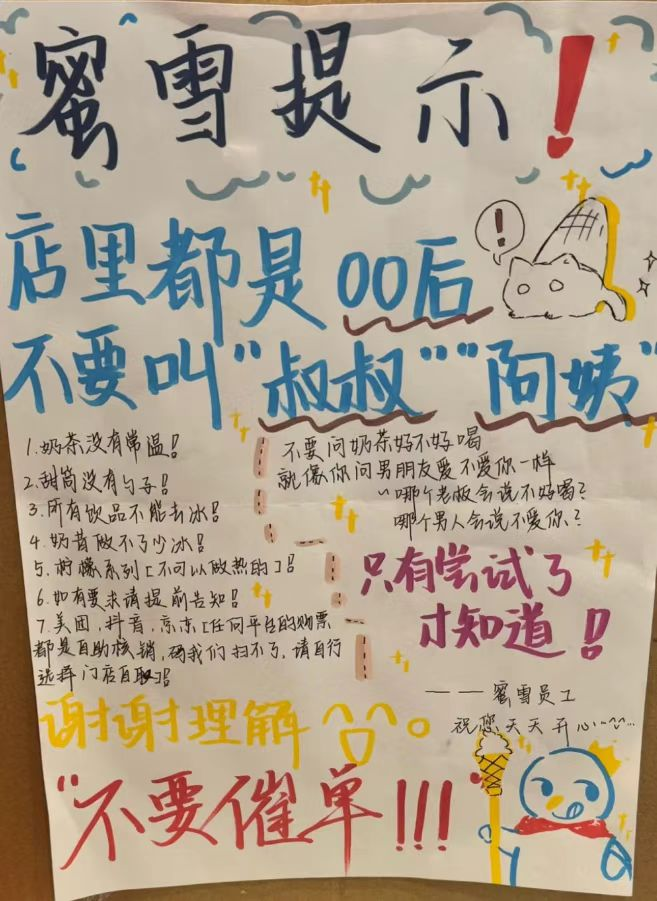
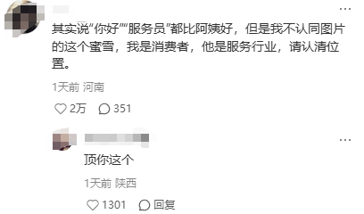

腋窝
@mofuwo8964
虽然早把这人b了也懒得喷，但是说个题外话，蜜雪冰城奶茶没有常温是因为红茶绿茶四季春啥的都是热水泡完之后过滤再加冰块搅拌的，但奶茶粉只能用热水冲，所以加过凉水之后要么是温热的，要么就加冰…
因为我在蜜雪冰城摇过🙏


颜克权
@yantanzhang
蜜雪冰城门店提示：店里都是00后，不要叫阿姨；
明明我是消费者，他是服务行业，叫阿姨又不犯法，他还给我定上规矩了？认不清自己的位置啊！
网友：蜜雪也有主理人吗？ https://t.co/EwcQLcRBGe